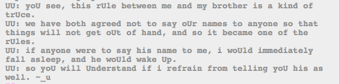

Oooooooooooh.
Okay, I guess that information is useful and interesting now.
uu killed Calliope’s dreamself, or I would count this as more evidence that they’re the same person. It would make a bit of sense, if they were swapping between awake and dreamself, but they can’t if one dreamself is dead, right?